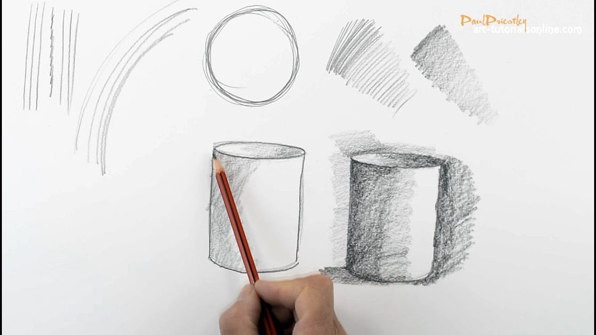
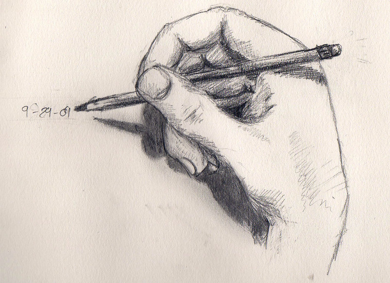
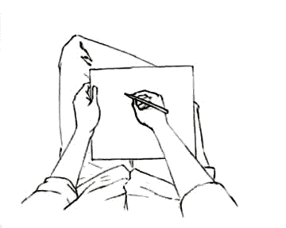

Sketch
Sketch, traditionally a rough drawing or painting in which an artist notes down his preliminary ideas for a work that will eventually be realized with greater precision and detail.
Typically it is a Free hand Drawing where as you draw with some sort of freedom.
 
In a traditional sketch, the emphasis usually is laid on the general design and composition of the work and on overall feeling.
Such a sketch is often intended for the artist’s own guidance; but sometimes, in the context of a bottega (studio-shop) type of production, in which an artist would employ many assistants, sketches were made by the master for works to be completed by others.

Three main types of functional sketches.
There are three main types of functional sketches.The first—sometimes known as a croquis—is intended to remind the artist of some scene or event he has seen and wishes to record in a more permanent form.
The second—a pochade—is one in which he records, usually in colour, the atmospheric effects and general impressions of a landscape.
The third type is related to portraiture and notes the look on a face, the turn of a head, or other physical characteristics of a prospective sitter.